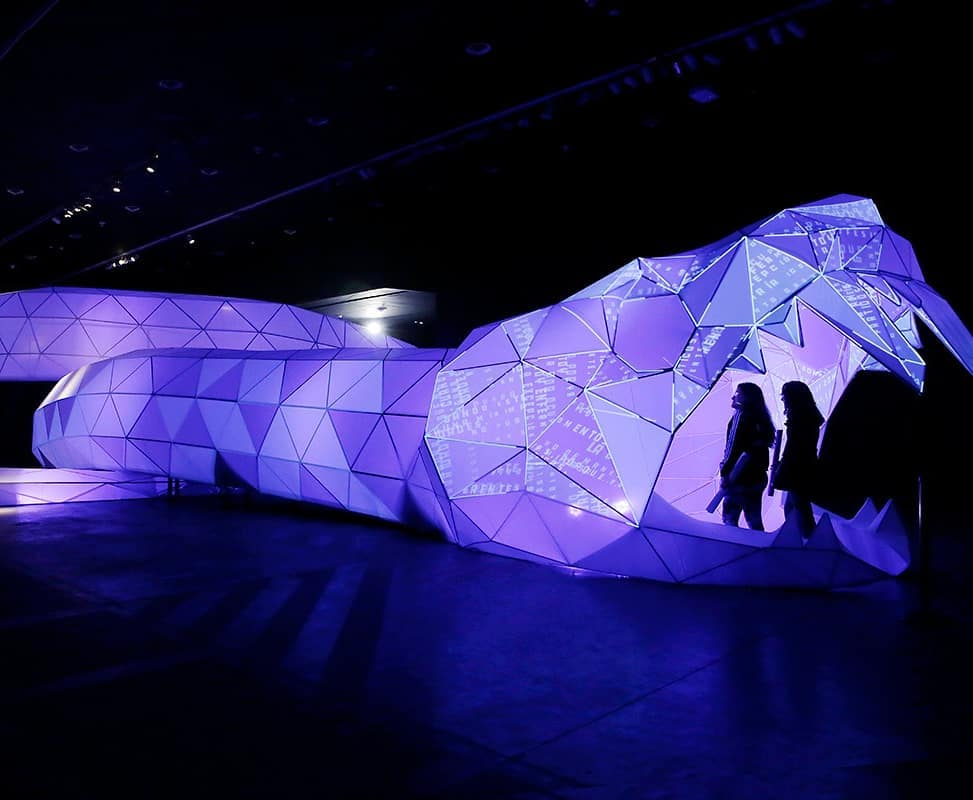
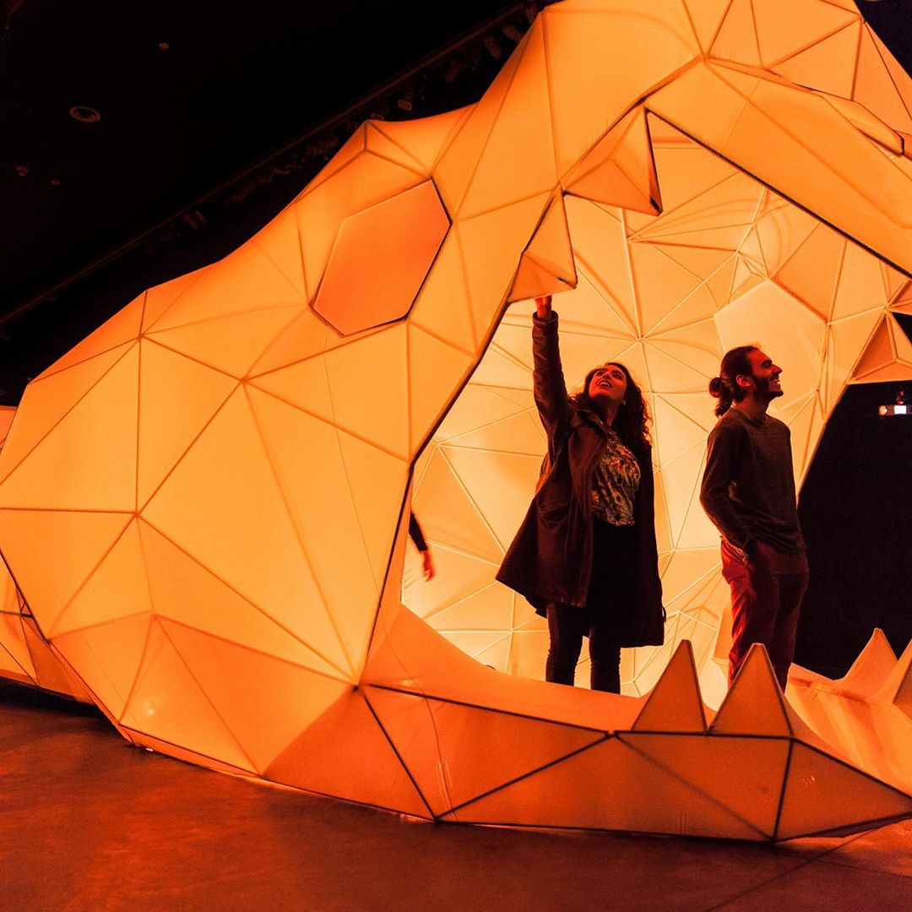
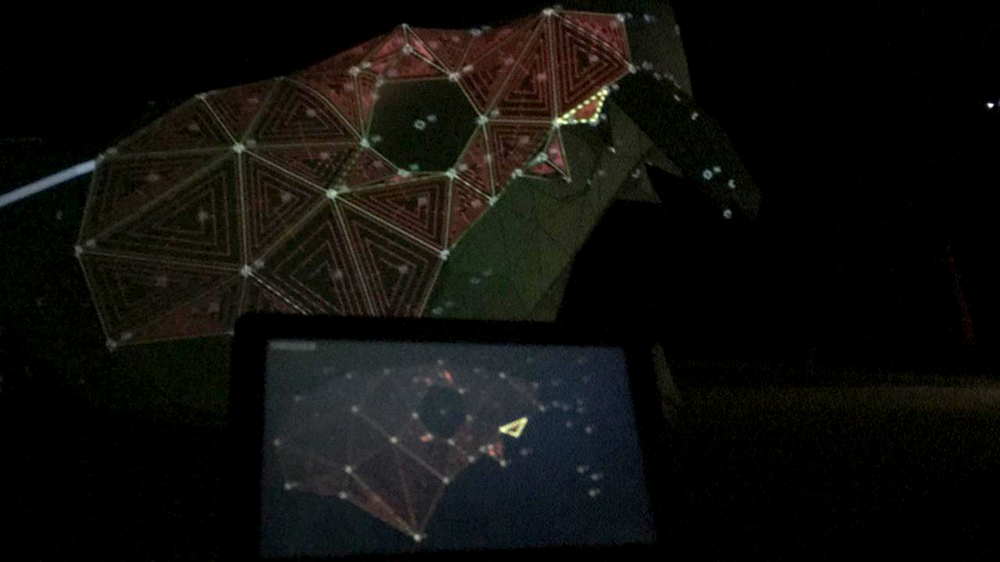
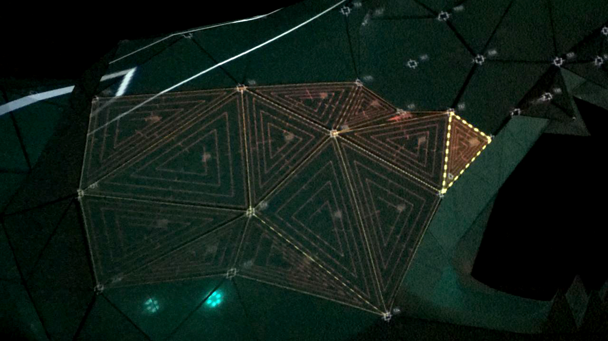
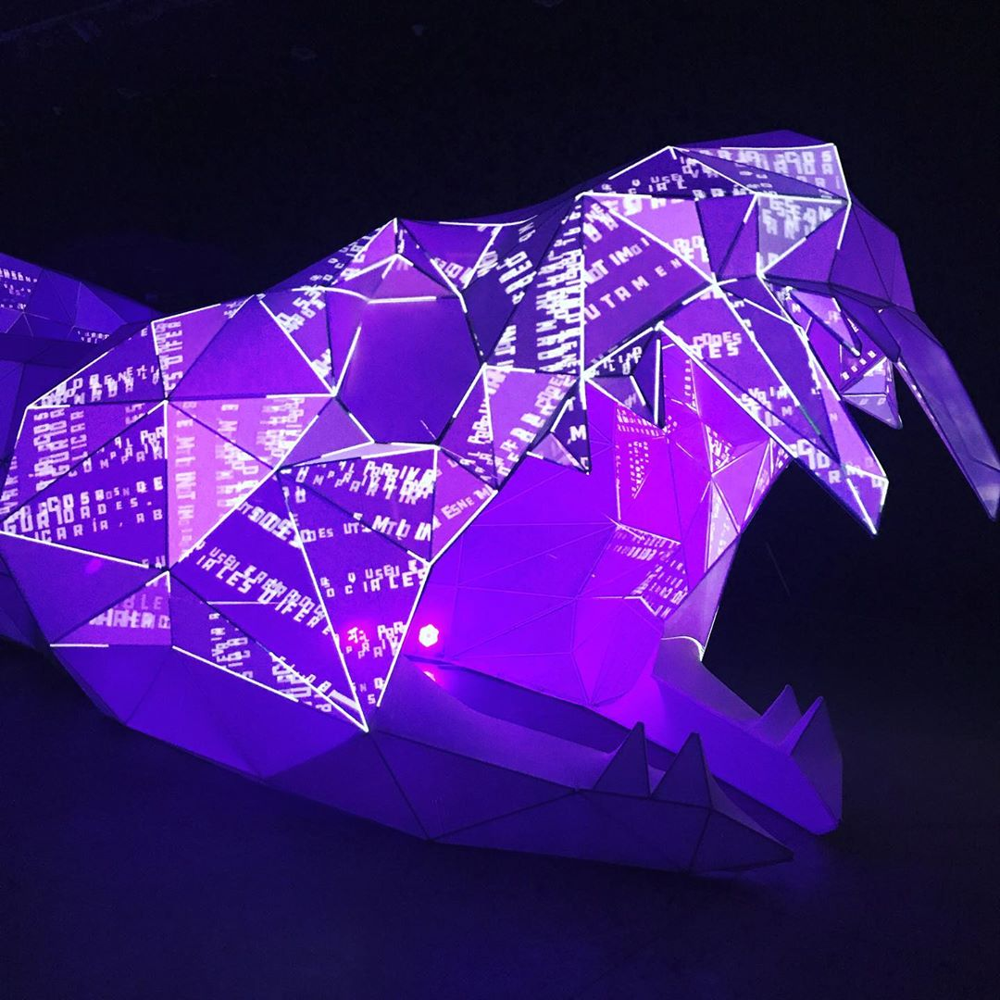
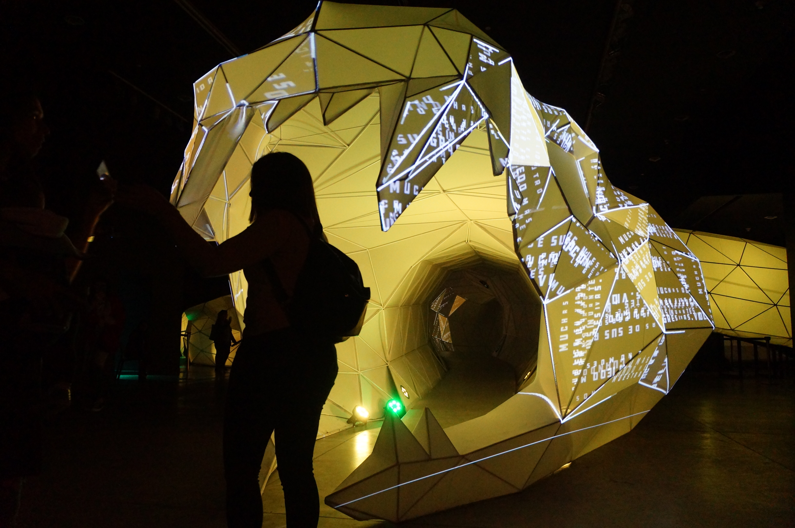

los anillos de la serpiente - 2021
sistema de mapping y animación de textos para “los anillos de la serpiente”, una estructura proyectada recorrible de 80 metros, de proyecto biopus.
proyecto de visualización de datos
video mapping and text animation software, for ““los anillos de la serpiente”, an immersive sculpture, by proyecto biopus.

   